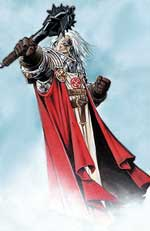

Descrizione Generale
I Predicatori rappresentano la maggioranza dei chierici tanatiani. I Predicatori sono i chierici che dedicano la loro vita alla cura delle comunità dei fedeli ed alla diffusione del verbo divino tra la gente. I Predicatori, dunque, rappresentano il tessuto fondamentale della chiesa di Tanatos, essendo costoro i chierici che dedicano la maggior parte del loro tempo al servizio dei fedeli.
Gerarchia Ecclesiastica
I Predicatori sono
organizzati territorialmente. Tutti i territori in cui è diffusa la religione
tanatiana sono suddivisi in Vescovati. La suddivisione territoriale è operata
con decisione del Grande Concilio Ecclesiastico e spesso tale
suddivisione segue i confini delle entità politiche laiche nelle quali si
trovano le comunità dei fedeli. I Vescovati più importanti, per numero di fedeli
o per posizione strategica, acquisiscono il nome di Arcivescovati e sono retti
da un Arcivescovo. Tutte le chiese e le strutture religiose (fatta eccezione per
i monasteri) presenti nel territorio di un Vescovato (od Arcivescovato) sono
gestite dal Vescovo (od Arcivescovo) il quale ha potere di imperio assoluto nel
suo territorio, dovendo unicamente sottostare alle decisioni prese del Grande
Concilio Ecclesiastico. Coloro che desiderano divenire Predicatori (od
Inquisitori) sono chiamati postulanti. Costoro si recano in una struttura
di insegnamento teologico presente nel Vescovato e
dopo un duro apprendistato, se risultano degni, sono ordinati come Diaconi.
I Predicatori hanno una loro gerarchia all'interno di ogni Vescovato. Al vertice della
gerarchia dei Predicatori si trova il Vescovo (o l'Arcivescovo).
Il Diacono è colui che è stato ordinato come
Predicatore
all'interno di un Vescovato. Il Vescovo quindi assegna i Diaconi (a seconda dei
meriti, del loro livello di esperienza e delle loro conoscenze) ad una chiesa di
una comunità locale guidata da un Sacerdote Capo Culto Locale od un
Monsignore, oppure ad un Sacerdote Dedicato. Il Diacono,
quindi, deve dedicare 120 giorni
all'anno alla cura della comunità presso la quale è stato assegnato dal Vescovo
restando sotto le dipendenze del suo superiore. Il Diacono deve contribuire alla
gloria del suo Vescovato versando
il 25% di tutti i suoi guadagni lordi al Vescovo. Il Diacono, dunque, non
gestisce una sua comunità, chiesa od altro centro di interesse religioso, ma
aiuta il rispettivo Sacerdote, Monsignore o Vescovo nella sua gestione. Nel
tempo libero i Diaconi possono svolgere le loro attività personali dovendo, in
ogni caso, propendere per la cura delle comunità dei fedeli tanatiani. I
Predicatori mantengono il titolo di Diacono dal 1° al 4° livello di esperienza.
Il Sacerdote è il Diacono che ha raggiunto il
5° livello di esperienza. Dopo che un Diacono raggiunge il 5° livello ed
effettua il relativo passaggio di livello costui viene nominato Sacerdote dal
proprio Vescovo. Le nomine a Sacerdote avvengono ogni inizio anno durante il
mese di Norio. I Sacerdoti sono suddivisi in due tipologie:
- Il Sacerdote Capo Culto Locale: I Sacerdoti più
influenti (per la loro ricchezza, appoggio politico e livello di esperienza)
sono posti dal Vescovo alla guida di una comunità di fedeli (e della relativa
chiesa) situata all'interno del Vescovato. Questi Sacerdoti gestiscono
autonomamente questa comunità, potendo utilizzare i Diaconi a loro assegnati dal
Vescovo, ed utilizzano come desiderano i guadagni provenienti della stessa.
Costoro sono personaggi rispettati ed autorevoli, specie all'interno della loro
comunità di fedeli rappresentando in questa il vertice dell'autorità
ecclesiastica. Questi Sacerdoti sono comunque sotto il controllo del Vescovo e
devono rispettarne le direttive potendo essere da questi rimossi o spostati ad
altra comunità (ciò avviene sempre durante il mese di Norio). I Sacerdoti
Capi Culto Locali devono contribuire alla gloria del loro Vescovato versando
il 30% di tutti i loro guadagni lordi al Vescovo.
- Il Sacerdote Dedicato: Tutti gli altri Sacerdoti
sono assegnati dal Vescovo allo svolgimento di un compito determinato. Costoro,
quindi, non gestiscono una comunità ma hanno la responsabilità di un centro di
interesse religioso all'interno del Vescovato. Compiti affidati a tali sacerdoti
possono consistere nella gestione di centri o strutture del Vescovato (come ad
es. biblioteche, centri di ospitalità, seminari, centri di beneficenza, ecc...),
nella cura particolare di una famiglia di fedeli nobiliari o molto importante
che possiede una cappella privata, nel dedicarsi alla cura religiosa di una
particolare istituzione (ad es. una cappella situata su una nave militare, in
una roccaforte militare, in un ordine cavalleresco, ecc...) od in altri
specifici ruoli religiosi. Tali incarichi sono creati secondo necessità ed
opportunità dal Vescovo il quale cerca in ogni caso di sistemare tutti i Diaconi
che raggiungono il 5° livello di esperienza ad un incarico per nominarli
Sacerdoti. Questi Sacerdoti devono dedicare almeno 120 giorni
all'anno alla cura dell'incarico che è stato affidato loro dal Vescovo. Il
Sacerdote Dedicato deve contribuire alla gloria del suo Vescovato versando
il 25% di tutti i suoi guadagni lordi al Vescovo. Per ogni periodo di 30
giorni che dedicano nel corso dell'anno allo svolgimento del loro incarico
ricevono dal Vescovo un salario che dipende dal loro livello di
esperienza come specificato nella seguente tabella, si noti che su tale salario i
Sacerdoti Dedicati non sono tenuti a versare
al Vescovo la percentuale dovuta per il loro obbligo
di contribuzione:
| LIVELLO DEL SACERDOTE | SALARIO OGNI 30 GIORNI |
| Sacerdote dedicato del 5° livello | 100 corone |
| Sacerdote dedicato del 6° livello | 125 corone |
Il Monsignore rappresenta un elevato rango del clero. Questo è il
titolo acquisito dai Predicatori che raggiungono il 7° livello
di esperienza. Una volta che un Sacerdote ha raggiunto il 7° livello
di esperienza costui acquisisce di diritto il titolo di Monsignore e deve
lasciare la guida della propria comunità locale se Sacerdote Capo Culto Locale o
del proprio incarico se Sacerdote Dedicato. Ai più influenti Monsignori (per la
loro ricchezza, appoggio politico e livello di esperienza) il Vescovo affida la
guida di un'importante comunità di fedeli (e della relativa chiesa che prende il
nome di Duomo) situata all'interno del Vescovato. Tali Monsignori
gestiscono autonomamente questa comunità, potendo utilizzare i Diaconi a loro
assegnati dal Vescovo, ed utilizzano come desiderano i guadagni provenienti
della stessa. Costoro sono personaggi estremamente potenti e rispettati, in
particolare all'interno della loro comunità di fedeli rappresentando in questa
il vertice dell'autorità ecclesiastica. Questi Monsignori sono comunque sotto il
controllo del Vescovo e devono rispettarne le direttive potendo essere da questi
rimossi o spostati ad altra comunità (ciò avviene sempre durante il mese di
Norio). Qualora raggiungano il 7° livello di esperienza Sacerdoti a cui non può
essere affidata la gestione di un Duomo (in quanto tutte le comunità locali
risultano già essere state affidate a Monsignori che il Vescovo non desidera
rimuovere) costoro acquisiscono lo stesso il titolo di Monsignori (potendo
progredire di livello) e diventano obbligatoriamente membri del Collegio
Vescovile Tanatiano che rappresenta l'organo consultivo privato del Vescovo,
costoro coadiuvano il Vescovo ad amministrare il Vescovato operando su sua
delega e sostituendolo nelle visite alle comunità locali e nei compiti di
rappresentanza. I Monsignori membri del Collegio Vescovile Tanatiano,
quindi, devono dedicare 90 giorni
all'anno allo svolgimento degli incarichi di rappresentanza che il Vescovo
affida loro, tale incarico è svolto gratuitamente in favore del Vescovo.
Tutti i Monsignori, siano essi alla guida di un duomo che membri del Collegio
Vescovile Tanatiano, devono contribuire alla gloria del loro Vescovato versando
il 20% di tutti i loro guadagni lordi al Vescovo. I Monsignori possono
raggiungere il 9° livello di esperienza, possono progredire oltre tale livello
esclusivamente i Predicatori che sono eletti Vescovi.
Il Vescovo è il Predicatore più importante, e
probabilmente il chierico di Tanatos più illustre e potente. Si tratta di
personaggi estremamente ricchi e potenti che possono considerarsi al pari di
reggenti e sovrani. I Vescovi (e gli Arcivescovi) gestiscono grandi territori di
fedeli chiamati Vescovati (o Arcivescovati) comandando i numerosi Predicatori e
Inquisitori che si trovano in tale territorio. Quando un Vescovo (od un
Arcivescovo) muore o si ritira il Grande
Concilio Ecclesiastico elegge fra tutti i Monsignori tanatiani il suo
successore. Essendo i posti estremamente limitati tale scelta ricadrà,
ovviamente, sul Monsignore più illustre e potente e politicamente sponsorizzato.
Una volta eletto Vescovo il chierico può passare al 10° livello di esperienza
per poi progredire oltre. I Vescovi sono membri permanenti Grande
Concilio Ecclesiastico con diritto di voto. Una volta eletti
mantengono il loro incarico a vita o fino a che non decidono di ritirarsi a vita
provata o monastica. Un Vescovo, infatti, può essere deposto solo con decisione
presa all'unanimità da tutti i restanti membri del Grande Concilio
Ecclesiastico (questo caso estremamente eccezionale rappresenta,
assieme al caso del ritiro a vita privata o monastica, l'unico caso di esistenza
di un Vescovo senza Vescovato). Tutti i Vescovi devono contribuire alla gloria
del culto tanatiano versando il 15% di tutti i loro guadagni lordi al Pontefice
Massimo.
Compiti e Doveri
Voto della Fede: Tutti i Predicatori tanatiani, appena sono ordinati, devono effettuare obbligatoriamente almeno un voto che possono selezionare a loro scelta tra tutti i voti della fede tanatiana.
Obbligo di Contribuzione: Tutti i Predicatori hanno l'obbligo di contribuire al loro Vescovato versando una parte dei loro guadagni lordi che varia a secondo del loro rango e della loro funzione nell'ambito della gerarchia ecclesiastica. Una volta divenuti Vescovi (o Arcivescovi) i Predicatori contribuiscono alla gloria del culto di Tanatos versando parte dei loro introiti direttamente nelle casse del Pontefice Massimo.
Giorno della Consacrazione
(Punti Consacrati):
Tutti i Predicatori hanno l'obbligo di effettuare speciali rituali ogni X di
decade. Si tratta del giorno riservato alla Consacrazione che consiste in
una lunga funzione religiosa che dona molto potere diretto alla divinità.
Durante il X di ogni decade i Predicatori, infatti, restano l'intera giornata in
preghiera e qualora sono alla presenza di fedeli effettuano l'opera di
predicazione e raccolta donazioni in favore della chiesa tanatiana. Nella
normalità dei casi i Predicatori trascorrono l'intera giornata in chiesa dove i
fedeli hanno l'obbligo di recarsi e pregare per la divinità ascoltando le parole
dei Predicatori presenti, qualora però, per qualsiasi motivo, il Predicatore si
trovi lontano da una chiesa tanatiana costui dovrà comunque interrompere le
proprie attività per restare in preghiera l'intera giornata, anche se da
solo, utilizzando gli oggetti sacri che ogni Predicatore deve necessariamente
acquistare e portare con sé. Qualora siano presenti più Predicatori i rituali
sono diretti dal Predicatore con il rango ecclesiastico più alto mentre gli
altri chierici si limitano a coadiuvarlo. Svolgendo il Giorno della
Consacrazione, inoltre, i Predicatori accumulano punti consacrati. Si tratta di punti che possono essere da costoro utilizzati
in varie occasioni. Ogni Giorno della Consacrazione, se il chierico ha
effettuato i relativi rituali, costui può effettuare un prova sulla metà del proprio punteggio di saggezza
(arrotondato per difetto), al quale andranno applicati i seguenti modificatori:
- Se il chierico si trova in una chiesa tanatiana: +2 alla prova.
- Se il chierico non si trova in una chiesa ma su un terreno consacrato con la
magia sanctify: +1 alla prova.
- Se il chierico non si trova in una chiesa ma partecipano 5 fedeli (ogni devoto
vale per due): +1 alla prova.
- Se il chierico utilizza polvere di diamante dal costo di 5 g.p. per suo
livello di esperienza: +1 alla prova.
- Se il chierico possiede la competenza ceremony e riesce nella prova: +1 alla prova
(se fallimento critico -1 alla prova, se successo critico +2 alla prova).
Qualora la prova ha successo il Predicatore costui avrà ricevuto un punto
consacrato.
Se al Giorno della Consacrazione partecipano fedeli tanatiani che restano
l'intera giornata in preghiera assieme al Predicatore costoro riceveranno
(sempre che il Predicatore non abbia interrotto la consacrazione) il giorno
successivo gli effetti della magia Benedizione Tanatiana. Si noti che gli
effetti si otterranno a partire dal momento di flusso divino del giorno
successivo e dovranno essere utilizzati prima del nuovo momento di flusso di
energia il giorno seguente. I fedeli ricevono questo beneficio automaticamente
senza che sia richiesto il lancio di alcun incantesimo da parte del Predicatore,
inoltre, non è richiesto alcun pagamento alla chiesa tanatiana per l'utilizzo di
tale beneficio. Tale beneficio non si estende ai Predicatori ma si estende ai
Frati, agli Inquisitori ed ai paladini che restino in preghiera insieme ai primi
per tutto il Giorno della Consacrazione.
Se per qualsiasi motivo un Predicatore è costretto ad
interrompere il proprio giorno di preghiera dovendo compiere
durante un Giorno della Consacrazione una qualsiasi attività (anche per poco
tempo) che sia diversa dal pregare la propria divinità e dal lanciare
incantesimi esclusivamente su fedeli tanatiani (ad es. è costretto a combattere
od a spostarsi dal luogo di preghiera) costui non avrà potuto consacrare la
giornata alla propria divinità, per tale motivo non solo non potrà effettuare il
tiro per ottenere un punto consacrato ma perderà due punti consacrati che
aveva fino ad allora eventualmente accumulati, inoltre vedrà ridursi della
metà i suoi punti preghiera nei giorni successivi fino a che non riuscirà ad
eseguire interamente un Giorno della Consacrazione il giorno X di una successiva
decade.
Abilità
minime richieste
Saggezza 10
Carisma 10
(Se costoro dispongono sia di un punteggio in Saggezza
pari ad almeno 16 che di un punteggio in Carisma pari ad almeno 13,
questi ricevono un bonus di +10%
ai punti esperienza)
NonWeapon Proficiencies (priest, general)
Bonus = Religion
Required = Oratory, Reading/Writing (lingua corrente)
Raccomandate = Languages, Ancient (Argan), Ancient History, Healing, Persuasion
Weapon Proficiencies
Required = Nessuna
Armi e armature permesse
Armature : Corazze di tessuto e corazze metalliche snodate (ivi comprese le corazze di materiali speciali ad esse assimilabili ad eccezione delle corazze di scaglie di lucertola in quanto ricordanti il Dio Serpente).
Scudi : Nessuno scudo
Armi : Tutte le armi ad eccezione di quelle da taglio e da punta.
Momento di flusso dell'energia divina: Il momento utilizzato da Tanatos è il sorgere del sole (ore 6.30).
A partire dal 3° livello: I Predicatori di Tanatos possono produrre questi oggetti magici minori a partire dal 3° livello di esperienza.
A partire dal 7° livello:
I Predicatori di Tanatos possono produrre
pergamene magiche
a partire dal 7° livello di esperienza.
Incantesimi generali (Player's Handbook, Tome of Magic, Spell and Magic, Necromancers)
Incantesimi
1° LIVELLO
|
Bless |
|
Call Upon Faith |
|
Combine |
|
Command |
|
Cure Light Wounds |
|
Detect Evil |
|
Detect Magic |
|
Light |
|
Protection from Evil |
|
Purify Food and Drink |
|
Sacred Guardian |
|
Sunscorch |
2° LIVELLO
|
Aid |
|
Calm Violence |
|
Chant |
|
Cure Moderate Wounds |
|
Enthrall |
|
Hesitation |
|
Hold Person |
|
Restore Strength |
|
Sanctify |
|
Slow Poison |
|
Withdraw |
3° LIVELLO
|
Continual Light |
|
Cure Blindness & Deafness |
|
Cure Disease |
| Cure Severe Wounds |
|
Dictate |
|
Dispel Magic |
|
Glyph of Warding |
|
Hold Poison |
|
Invisibility Purge |
|
Negative Plane Protection |
|
Prayer |
|
Protection from Evil 10’ |
|
Remove Curse |
4° LIVELLO
|
Adamantite Mace |
|
Compulsive Order |
|
Cure Serious Wounds |
|
Mental
Domination |
|
Recitation |
5° LIVELLO
|
Cure Critical Wounds |
|
Dispel Evil |
|
Impending Permission |
|
Raise Dead |
|
Righteous Wrath of The Faithful |
Incantesimi speciali (Unici della divinità)
1° LIVELLO
|
Benedizione Tanatiana |
|
Tanatos Aura of Good |
|
Circle of Healing |
2° LIVELLO
|
Apollotir Zone Protection |
|
Lesser Healing Rays |
| Restore Fatigue |
3° LIVELLO
|
Call Upon Holy Protection |
|
Improved Circle of Healing |
|
Moderate Healing Rays |
|
Restore Group Fatigue |
4° LIVELLO
|
Globe of Sunlight |
|
Holy Ground |
|
Severe Healing Rays |